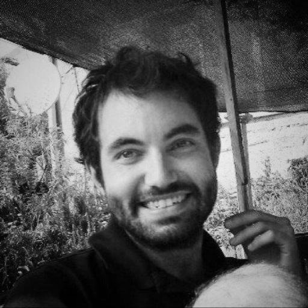

ANCIR’s iLab provides grantees, collaborators, partners and formalised members with round-the-clock investigative
support services. This includes editorial, cross-examination, data, technology, forensics, financial and other
services to assist in addressing and resolving investigative queries.
To access the iLab, just email your inquiry to our contact at
ilab@investigativecenters.org. We will respond to
all contact requests within 36 hours.
What kind of support is available?
Examples of inquiries may range from tracing metadata of documents and encrypting emails to identifying beneficial
owners in opaque corporate vehicles.
The service underpins and complements Investigative Dashboard Africa (ID) service which provides free data from over
400 databases in 120 jurisdictions.
If you are interested in iLab services for a special project, please email
ilab@investigativecenters.org with special project, your institute/media house and theme in the
subject title.
Who is providing support?
Our staff is comprised of core people who are also ANCIR’s trainers and contributors on in-house projects and
collaborations.
Beyond this, iLab has a broad network of experts in the Maghreb, as well as Francophone and Lusophone regions that
can be called upon for a variety of investigative bottlenecks ranging from extractive industries to climate, aviation,
maritime and other queries.
Amanda Potgieter
 Amanda Potgieter, managing editor for ANCIR, started working in media 10 years ago at a campus radio station. Since then, she has worked across a number of media, night editor at the Mail & Guardian.
Amanda Potgieter, managing editor for ANCIR, started working in media 10 years ago at a campus radio station. Since then, she has worked across a number of media, night editor at the Mail & Guardian.
She also worked as head of research for sub-Saharan Africa at JLL. In a moment of insanity, she quit her day job to freelance full time and return to her first loves: writing and editing.
Jacopo Ottaviani

Jacopo Ottaviani is an ICFJ Knight Fellow and works as pan-African data editor at Code for Africa. He is experienced in data journalism, digital cartography, immersive storytelling and transnational data projects, and builds narratives and visualisations around data and fieldwork.
His innovative works have been published by, among others, DER SPIEGEL, El País, Al Jazeera and Internazionale.
David Lemayian
David Lemayian is an ICFJ Knight Fellow and leads the development of journalistic tools and software for Code for Africa. His projects help local newsrooms to produce innovative storytelling and to increase engagement with their audiences across platforms.
Lemayian is an experienced technologist with a track record of finding creative ways to use technology in media, government and civil society organizations. He has served as Code for Africa’s lead technologist since 2012 and has worked on projects that include sourceAFRICA, Africa’s largest repository of searchable documents that journalists can use in investigations, and “Dodgy Doctors,” a web and SMS tool that allows users to check if their doctor is registered or not. He manages Code for Africa’s team of software developers and oversees all related technical technical infrastructure.
Become an iLab team member!
If you are interested in becoming part of the iLab network as contributing expert, please email ilab@investigativecenters.org
with your country and expertise in the subject title, including a resume, samples of work, and a cover letter.